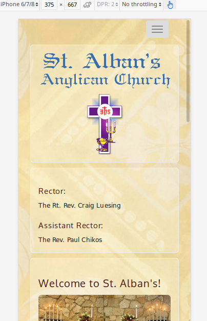
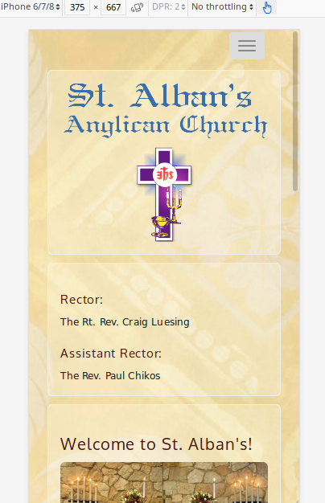

Mobile Design (Jun 2015)
Scenario: Church Website
I was tasked with upgrading the website for St. Alban's Anglican Church, Tacoma, WA. The existing website (which I had originally designed) was desktop only, and the church needed a mobile version to improve SEO and accomodate users who found the website on a mobile device.
 

{kind=link}
Goals
Revamp the website to make it compatible with mobile devices.
Process
I decided to retain the existing three-column layout—partly reflecting the visual symmetry in our church's service. I leveraged the Bootstrap CSS framework for ensuring the layout would work with smaller devices. Following best web design practices, I tried to keep the look-and-feel simple and easy to navigate. Branding was a challenge; there were no guidelines and few existing elements to use except the logo. I attempted to strike a balance between "traditional" and "modern."
Looking back, I dislike how this project turned out and can see many areas needing improvement. If I were starting over, I would likely stick with a more traditional look-and-feel and pull the color palette strictly from the logo (or request to design a new logo). I would also aim for more uniformity in the font types and sizes, as well as feature more photos. I've learned a lot since 2015 about UX and would apply what I've learned in accessiblity and scale to improve the site's aesthetics and ease-of-use.
Outcome
The website design met the church's needs: it is mobile friendly, easy to navigate, and compatible with most browsers. The website also maintains a high ranking in Google search results.